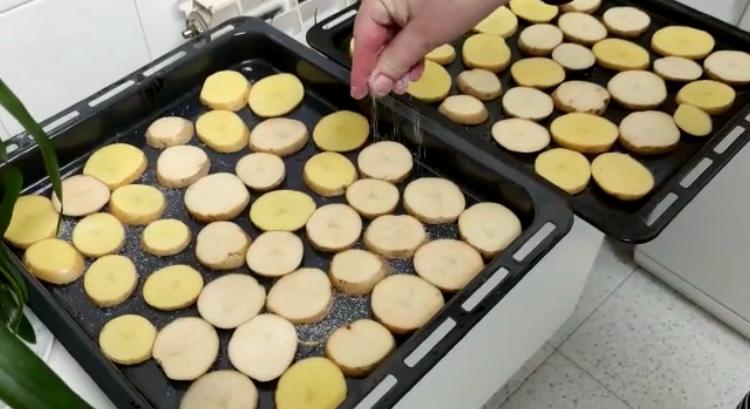

Ingredientes:
Aceite de oliva virgen extra.
Sal.
1 cordero.
2 dientes de ajo.
Vino blanco de guisar
Patatas.
Instrumentos:
Fuente de horno.
Mortero.
- Poner las patatas cortadas en rodajas de 1cm en la fuente de horno y añadir sal.

- Colocamos el cordero por encima de las patatas.
- Echamos aceite de oliva y lo restregamos por el cordero.
- Echamos agua fría por encima del cordero y las patatas. Que más o menos cubra las patatas.
- Metemos el cordero al horno a 250 Celsius. IMPORTANTE: Vigilar que no le falte nunca agua en el fondo durante toda la cocción. Horneamos por lo menos 30min por cada lado, pero depende del cordero.
- Cuando la piel está ya tostada como en la foto, es el momento de darle la vuelta.
Cuando está tostada por el segundo lado, se le echa sal.
Le volvemos a dar la vuelta y le echamos sal por el primer lado.
Pelamos dos dientes de ajo (uno por bandeja), lo troceamos en trozos muy pequeños y lo ponemos en el mortero. Echamos un poquito de sal para que los ajos no salten, y machacamos.
Cuando estén machacados los ajos, le echamos un chorrito de vino de guisar y lo removemos.
Añadimos el majadito de ajo y vino al cordero por encima. Lo dejamos en el horno un rato a 220 grados Celsius hasta que esté hecho.